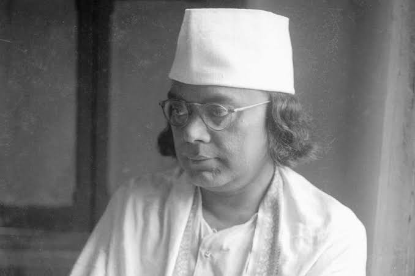

Tribute Page using HTML and CSS

Kazi Nazrul Islam
Kazi Nazrul Islam (1899–1976), fondly remembered as the "Rebel Poet" (Bidrohi Kobi), was a fiery voice of
revolution and humanism in Bengali literature.
Born in Churulia, West Bengal, he rose from humble beginnings to become a poet, lyricist, musician, journalist,
and fearless freedom fighter against colonial oppression.
Through his bold writings, he championed equality, justice, religious harmony, and the dignity of the oppressed,
shaking the foundations of injustice.
Honored as the national poet of Bangladesh, Nazrul's legacy continues to inspire generations with themes of
rebellion, love, and unbreakable human spirit.
Famous Quote
বিদ্রোহী (from Bidrohi poem)
আমি অবনত নই, আমি চির-বিদ্রোহী!
আমি মস্তক তুলিয়া দাঁড়াইয়াছি বিশ্বের ঊর্ধ্বে, উচ্চ, একাকী!
English Translation (popular version):
"I am the unvanquished, I am the ever-rebellious!
I raise my head beyond this world, high, ever erect and alone!"
Timeline
-
1899 — Born on 24 May in Churulia village, Burdwan district, West Bengal, India.
-
1917 — Joined the British Indian Army (Bengal Regiment), served in Karachi; rose to quartermaster rank.
-
1921–1922 — Wrote and published the revolutionary poem "Bidrohi" (The Rebel), which became an anthem of
defiance.
-
1972 — Invited to independent Bangladesh on 24 May; settled in Dhaka with family as a state guest.
-
1976 — Passed away on 29 August in Dhaka, Bangladesh; buried with state honors.
Achievements
-
Authored the iconic revolutionary poem "Bidrohi" (The Rebel) in 1922, which became a powerful anthem of
defiance against tyranny and inspired the Indian independence movement.
-
Composed 3,000–4,000 songs known as Nazrul Geeti, blending classical, folk, and devotional styles, enriching
Bengali music forever and earning him the title "Bulbul of Bengal".
-
Actively participated in anti-colonial struggles, including the Non-Cooperation and Khilafat movements,
facing imprisonment multiple times for his fearless criticism of British rule.
-
Advocated tirelessly for social justice, gender equality, communal harmony, and the upliftment of
marginalized communities through poetry, essays, novels, and short stories.
-
Recognized as the National Poet of Bangladesh; his works promoted secularism, anti-imperialism, and human
rights, leaving an indelible mark on Bengali culture and global humanist thought.